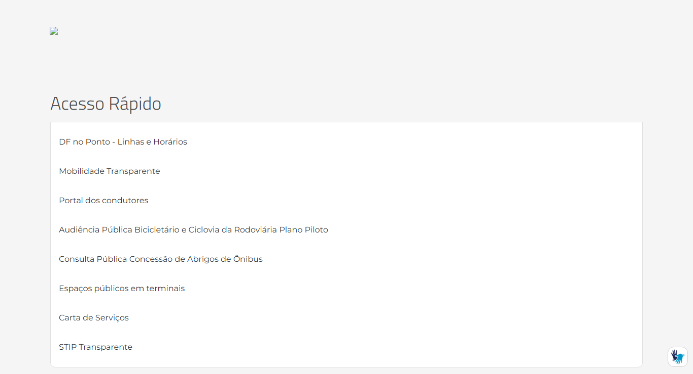
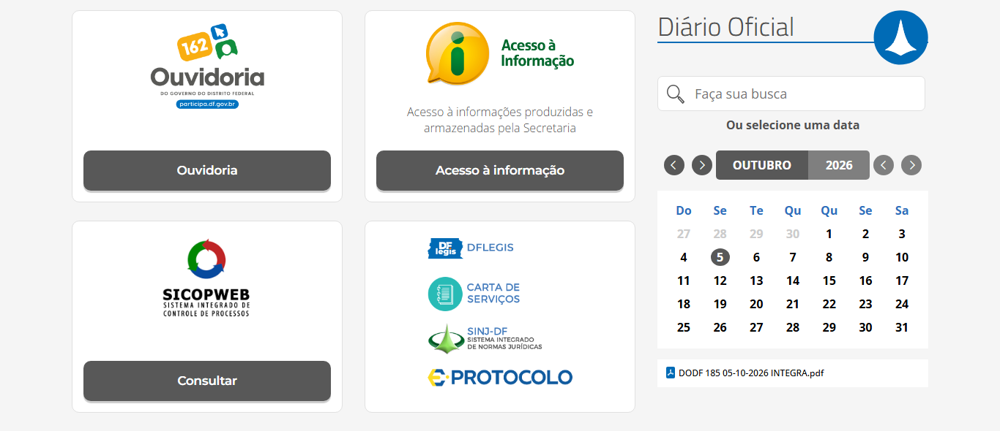

Visibilidade e Reconhecimento¶
Histórico de Versão e Contribuição¶
| Data | Versão | Descrição | Autor(es) | Revisor(es) |
|---|---|---|---|---|
| 05/10/2026 | 1.0 | Análise de visibilidade e reconhecimento no site do SEMOB-DF. | Gabriel Melo | Igor Dantas |
1. Introdução¶
As ideias usadas como critério nesta análise são:
- Tornar as coisas visíveis e reduzir os golfos de execução e de avaliação. Antes da ação, o usuário precisa ver o que é possível fazer e como. Depois da ação, precisa ver o estado do sistema, de forma consistente com o seu modelo mental.
- Não oferecer opções indisponíveis ou sem sentido no momento da interação.
- Reconhecer em vez de lembrar. O usuário não deve ter de se lembrar para que serve um elemento de interface cujo símbolo não é reconhecido diretamente, nem guardar informações de uma parte do sistema para usar em outra. O motivo é o limite da memória de curto prazo.
- Instruções visíveis ou facilmente acessíveis sempre que necessário.
- Estado do sistema perceptível num relance, sem que o usuário precise procurá-lo. Segundo Cooper, a indicação de status pode ser sutil, como o ícone da caixa de entrada que aparece vazio, meio cheio ou lotado.
- Feedback adequado e no tempo certo. Pode ser sutil para ações frequentes e deve ser destacado para ações raras ou de grande consequência.
- Mostrar o caminho percorrido. O usuário não deve ser responsável por elaborar um mapa mental do que fez até o momento. Sinalizações claras orientam a navegação para que o usuário saiba sempre onde está.
2. Como a inspeção foi feita¶
- Inspeção da página inicial e das páginas internas Preços das Passagens e Ouvidoria.
- Capturas de tela da página inteira.
- Teste de acesso aos links que apontam para
semob.df.gov.br, sem "www".
Escala de gravidade usada: Alta (impede ou atrapalha muito a tarefa), Média (confunde ou atrasa) e Baixa (problema cosmético).
3. Pontos positivos¶
| # | Observação | Relação com o princípio |
|---|---|---|
| P1 | O campo de busca fica sempre visível no cabeçalho, com a instrução "Digite aqui o que você procura" (imagem 01). | Instruções visíveis; o usuário vê como agir. |
| P2 | Os cartões de Serviços Mais Procurados combinam ícone e rótulo em texto (imagem 03). | Reconhecimento em vez de memorização: o ícone não precisa ser decifrado sozinho. |
| P3 | No menu principal, a seta ⌄ mostra quais itens têm submenu (imagem 01). |
Torna visível o que é possível fazer antes da ação. |
| P4 | As páginas internas mostram uma trilha de navegação (breadcrumb) abaixo do menu (imagens 08 e 09). | Mostra onde o usuário está. |
| P5 | Cada página informa a data de publicação e a da última atualização, por exemplo "23/07/25 às 11h44 – Atualizado em 01/10/26 às 10h49". | Estado da informação perceptível: o usuário sabe se o conteúdo é atual. |
| P6 | O calendário do Diário Oficial destaca o dia atual e mostra o link da edição do dia ("DODF 185 05-10-2026 INTEGRA.pdf"), conforme a imagem 06. | Status sutil e perceptível num relance, no espírito do exemplo da caixa de entrada de Cooper. |
| P7 | Os recursos de acessibilidade ficam sempre visíveis: tamanho da fonte (Aa), alto contraste, VLibras e o link "Pular para o conteúdo principal". | Recursos disponíveis à vista, sem precisar ser lembrados. |
| P8 | Na página da Ouvidoria, o menu lateral lista todas as opções da seção (imagem 09). | O usuário vê o conjunto de ações possíveis naquele contexto. |
 Imagem 01: busca visível com instrução, setas indicando submenus e controles de acessibilidade na barra superior.
Imagem 01: busca visível com instrução, setas indicando submenus e controles de acessibilidade na barra superior.
4. Problemas encontrados¶
Resumo¶
| # | Problema | Diretriz violada (Cap. 10) | Gravidade |
|---|---|---|---|
| V1 | Conteúdo invisível ou quebrado na página inicial (banner e seção PPP) | Tornar as coisas visíveis (Norman) | Alta |
| V2 | Links que falham sem nenhum feedback do site | Feedback adequado; golfo de avaliação | Alta |
| V3 | Siglas sem explicação que exigem memorização (STPC, PDTU, CTPC, STIP...) | Reconhecer em vez de lembrar | Alta |
| V4 | Logotipos e rótulos genéricos que não dizem o que fazem ("Consultar", "Clique aqui", DFLEGIS) | Tornar visível o que é possível e como (golfo de execução) | Média |
| V5 | O efeito do clique não é visível (nova aba, outro site, download de arquivo) | Tornar visível o resultado da ação | Média |
| V6 | Falhas na sinalização de "onde estou" (trilha com "Modulo 15 Botoes", menu sem item ativo) | Manter o usuário informado sobre o caminho (Tognazzini) | Média |
| V7 | Opção "Entrar" visível para todos, embora só sirva para a equipe interna | Não oferecer opções sem sentido para o usuário | Baixa |
| V8 | Os serviços mais usados pelo cidadão têm pouco destaque visual | Tornar visível o que corresponde às intenções do usuário | Média |
V1. Conteúdo invisível ou quebrado na página inicial (gravidade alta)¶
- Banner principal quebrado. O primeiro elemento abaixo do menu deveria ser um carrossel de banners. Ele aparece como um ícone de imagem quebrada no canto, sobre uma faixa vazia de cerca de 150 px (imagem 02). As imagens do banner estão hospedadas em
semob.df.gov.br, sem "www", endereço que não existe no DNS. - Seção "Parceria Público Privada – PPP" praticamente invisível. O título e os seis botões (Avenida das Cidades, VLT via W3, Projeto Zona Verde, Metrô – DF, Concessão do BRT Sul e Oeste, Concessão da Rodoviária do Plano Piloto) são brancos sobre fundo cinza-claro (imagem 04). O fundo deveria ser uma imagem escura, que não carrega pelo mesmo motivo. Como não há cor de reserva, o texto fica quase ilegível.
Por que é um problema: é o caso mais básico de falta de visibilidade. Se o usuário não vê a opção, não sabe que ela existe, e o golfo de execução nem chega a ser percorrido. Na seção PPP, seis projetos importantes da Secretaria ficam escondidos.
Recomendação: corrigir os endereços das imagens (ver C3 no documento de Consistência). Definir também uma cor de fundo de reserva (background-color) escura para seções com texto branco sobre imagem, para que o texto continue legível se a imagem falhar.

Imagem 02: no topo, ícone de imagem quebrada no lugar do banner. Abaixo, o "Acesso Rápido" em forma de lista simples.
 Imagem 04: título e botões brancos sobre fundo cinza-claro, praticamente ilegíveis.
Imagem 04: título e botões brancos sobre fundo cinza-claro, praticamente ilegíveis.
V2. Links que falham sem nenhum feedback do site (gravidade alta)¶
Ao clicar em 10 dos 12 cartões de Serviços Mais Procurados (por exemplo, Preços das Passagens) ou em qualquer botão da seção LAI, abre-se uma nova aba com a tela de erro do navegador ("Não é possível acessar esse site", ERR_NAME_NOT_RESOLVED). Nessa tela:
- não há nenhuma mensagem da SEMOB explicando o que houve;
- não há caminho para voltar, porque a aba é nova e o botão "Voltar" fica desativado;
- não há indicação de que o mesmo conteúdo existe e funciona pelo menu.
Por que é um problema: o livro pede que, depois de uma ação, o sistema forneça "indicações do estado do sistema que sejam prontamente percebidas e consistentes com o seu modelo mental". A tela de erro do navegador faz o contrário: o usuário conclui que o site da SEMOB está fora do ar, o que não é verdade. O golfo de avaliação fica máximo, porque o usuário não consegue interpretar o efeito da própria ação.
Recomendação: corrigir os links. Como prevenção, configurar o redirecionamento de semob.df.gov.br para www.semob.df.gov.br e criar uma página de erro própria (404), com busca e links para as seções principais.
V3. Siglas sem explicação que exigem memorização (gravidade alta)¶
O site usa muitas siglas sem expansão nem dica (tooltip), inclusive no primeiro nível do menu principal:
| Sigla | Onde aparece | Significado (não informado no ponto de uso) |
|---|---|---|
| STPC | Menu principal "Dados STPC" | Sistema de Transporte Público Coletivo |
| PDTU | Menu principal "PDTU" | Plano Diretor de Transporte Urbano |
| PPA / PDTI | Menu Governança | Plano Plurianual / Plano Diretor de Tecnologia da Informação |
| CTPC | Menu Participação ("Resoluções – CTPC", "Atas - CTPC") | Conselho de Transporte Público Coletivo |
| STIP | Acesso Rápido ("STIP Transparente") | Serviço de Transporte Individual Privado (aplicativos) |
| JARI | Menu Ouvidoria ("Processos da Jari") | Junta Administrativa de Recursos de Infrações |
| LAI / SIC | Menu, título de seção e botões | Lei de Acesso à Informação / Serviço de Informação ao Cidadão |
| PPP, BRT, VLT | Seção PPP | Parceria Público-Privada, Bus Rapid Transit, Veículo Leve sobre Trilhos |
| SICOPWEB, DFLEGIS, SINJ-DF | Bloco de sistemas (imagem 06) | Nomes de sistemas do GDF |
A sigla STIP é um caso ilustrativo. Ela só é explicada no cartão "Serviço de Transporte Individual Privado de Passageiros por Aplicativos – STIP/DF". O link "STIP Transparente", no Acesso Rápido, fica em outra parte da página e não traz a explicação. O usuário precisa lembrar de um bloco para entender o outro.
Por que é um problema: o livro afirma que o usuário "não deve ter de se lembrar para que serve um elemento de interface cujo símbolo não é reconhecido diretamente", nem "se lembrar de informações de uma parte da aplicação quando tiver passado para uma outra parte". Para o cidadão comum, o público principal de um site de transporte, essas siglas são jargão administrativo. Ele precisa de memória prévia para reconhecer o que cada item oferece.
Recomendação: usar o nome por extenso nos menus e deixar a sigla entre parênteses, por exemplo "Plano Diretor de Transporte Urbano (PDTU)". Quando não houver espaço, usar o elemento <abbr title="...">, que mostra o significado ao passar o mouse e é lido por leitores de tela.
V4. Logotipos e rótulos genéricos que não dizem o que fazem (gravidade média)¶
- Logotipos como links sem rótulo de ação. O bloco com DFLEGIS, Carta de Serviços, SINJ-DF e e-Protocolo (imagem 06) mostra apenas marcas. Nada diz o que cada uma faz, por exemplo "pesquisar leis do DF" ou "abrir um protocolo". As imagens também têm texto alternativo vazio (
alt=""), então um leitor de tela não anuncia nada. - Botão "Consultar" abaixo do logotipo SICOPWEB: consultar o quê? Só quem já conhece o sistema sabe que se trata de consultar processos.
- "Clique aqui e confira!" e "clique aqui" na página da Ouvidoria (imagem 09): o texto do link não informa o destino.
- Ícones de redes sociais sem rótulo no cabeçalho (imagem 01). São convencionais e reconhecíveis, mas o ícone do Flickr (dois pontos) é pouco conhecido.
Por que é um problema: Norman diz que, antes da ação, é preciso "tornar visível para os usuários o que é possível realizar e como as ações devem ser feitas", com ações que "correspondam a intenções do usuário". Um logotipo de sistema não corresponde a uma intenção ("quero acompanhar meu processo"), mas ao nome interno de uma ferramenta.
Recomendação: acompanhar cada logotipo de uma frase de ação, como "Acompanhe seu processo (SICOPWEB)" ou "Pesquise leis e normas do DF (SINJ-DF)". Trocar "clique aqui" por textos que descrevam o destino, como "Conheça as melhorias do Participa DF".

Imagem 06: botão "Consultar" sem objeto; logotipos DFLEGIS, SINJ-DF e e-Protocolo sem dizer o que fazem. À direita, o calendário do DODF com o dia atual destacado (ponto positivo P6).V5. O efeito do clique não é visível (gravidade média)¶
Antes de clicar, o usuário não tem como prever o que vai acontecer:
| Efeito | Exemplos | Indicação visual |
|---|---|---|
| Abre em nova aba | Todos os cartões de Serviços Mais Procurados e de Acesso Rápido, inclusive páginas internas | nenhuma |
| Sai do site da SEMOB | DF no Ponto, Portal dos condutores, Mobilidade Transparente, Concessão da Rodoviária, Site PDTU, Regimento Interno (SINJ) | nenhuma |
| Abre um arquivo em vez de uma página | Organograma, Mapa Estratégico, Cronograma Reuniões -CTPC, Código de Conduta, Código de Ética, Plano de Fiscalização | nenhuma; os arquivos ficam misturados às páginas nos submenus |
Por que é um problema: o livro pede que o resultado das ações seja visível. Um clique que abre um arquivo grande, sai do site ou cria uma aba sem aviso surpreende o usuário e dificulta a avaliação do que aconteceu. Isso pesa mais em celulares e para usuários de leitores de tela.
Recomendação: usar ícones padronizados para link externo (↗), nova aba e tipo de arquivo, com o formato e o tamanho junto ao rótulo, por exemplo "Organograma (PDF, 300 KB)".
V6. Falhas na sinalização de "onde estou" (gravidade média)¶
A trilha de navegação existe (ponto positivo P4), mas falha no conteúdo:
- Nome interno do sistema na trilha. Na página Preços das Passagens, a trilha mostra "Secretaria de Estado... > Modulo 15 Botoes > Preços das Passagens" (imagem 08). "Modulo 15 Botoes" é o nome de uma pasta interna do gerenciador de conteúdo. O nome não significa nada para o cidadão e não corresponde ao caminho que ele fez (página inicial → Serviços Mais Procurados).
- O menu principal não marca a seção atual. Na página da Ouvidoria, o item "Ouvidoria" do menu tem a mesma aparência dos demais (imagem 09).
- O menu lateral não marca a página atual. Na mesma página, nenhum item do menu lateral está destacado. O usuário não sabe qual das 13 opções está vendo.
- Nomes diferentes para a mesma página: "Sobre a Ouvidoria" na trilha, "Ouvidoria" no título e "A Ouvidoria da SEMOB" no menu lateral. O usuário não consegue confirmar, num relance, que está onde queria.
Por que é um problema: segundo Tognazzini, citado no livro, "o usuário não deve ser responsável por elaborar um mapa mental do que fez até o momento ou por onde passou no sistema", e "sinalizações claras orientam a interação do usuário e lhe ajudam a navegar pela aplicação rapidamente, sempre cientes de onde estão".
Recomendação: renomear a pasta "Modulo 15 Botoes" para um nome voltado ao cidadão, como "Serviços". Destacar com cor ou negrito o item ativo no menu principal e no menu lateral. Usar o mesmo nome da página na trilha, no título e no menu.
 Imagem 08: a trilha de navegação exibe "Modulo 15 Botoes", nome interno do gerenciador de conteúdo.
Imagem 08: a trilha de navegação exibe "Modulo 15 Botoes", nome interno do gerenciador de conteúdo.
 Imagem 09: nenhum item do menu principal ou do menu lateral está destacado como atual. Trilha, título e menu lateral usam três nomes diferentes. No texto, links do tipo "clique aqui".
Imagem 09: nenhum item do menu principal ou do menu lateral está destacado como atual. Trilha, título e menu lateral usam três nomes diferentes. No texto, links do tipo "clique aqui".
V7. Opção "Entrar" visível para todos (gravidade baixa)¶
O link "Entrar" aparece na barra superior (imagem 01) e abre um formulário de login com e-mail e senha. Esse acesso serve só aos servidores que editam o conteúdo do portal. O cidadão não tem conta no site e não precisa dela para nenhum serviço oferecido ali.
Por que é um problema: o livro recomenda que a interface "não deve oferecer opções que não estejam disponíveis ou não façam sentido em um determinado momento da interação". Para o cidadão, "Entrar" sugere a existência de uma área pessoal, por exemplo para consultar o cartão de transporte, que não existe.
Recomendação: retirar o link da interface pública e manter o acesso administrativo por um endereço próprio, como /login. Se o link precisar ficar, renomeá-lo para "Acesso restrito (servidores)".
V8. Os serviços mais usados pelo cidadão têm pouco destaque visual (gravidade média)¶
O serviço que mais corresponde às intenções do público de um site de transporte, consultar linhas e horários ("DF no Ponto – Linhas e Horários"), aparece como o primeiro item de uma lista de texto sem destaque no Acesso Rápido (imagem 02), com o mesmo peso de "Espaços públicos em terminais". Ao mesmo tempo, blocos institucionais (LAI, Transparência, sistemas internos) ocupam boa parte da página inicial com botões bem visíveis (imagem 05).
Também na barra superior do GDF, os rótulos quebram em duas linhas ("Sobre o / Governo", "Acesso à / Informação"), em fonte pequena e de baixo contraste, o que dificulta a leitura num relance (imagem 01).
Por que é um problema: Norman pede que a interface ofereça "ações que correspondam a intenções do usuário" e as torne visíveis. Quando a ação mais procurada se confunde com itens secundários, o usuário precisa procurar o que deveria reconhecer de imediato.
Recomendação: dar às tarefas principais do cidadão (linhas e horários, preços, cartão e recarga, pontos de parada) um bloco de destaque logo abaixo do menu, no lugar do banner. Usar dados de acesso do site ou entrevistas com usuários (Cap. 7 do livro) para confirmar quais são essas tarefas.
5. Síntese das recomendações¶
- Corrigir os endereços sem "www" e definir cores de reserva para textos sobre imagem (resolve V1 e V2).
- Escrever nomes por extenso e usar
<abbr>para siglas (resolve V3). - Usar rótulos de ação em vez de logotipos e "clique aqui" (resolve V4).
- Usar ícones padronizados para link externo, nova aba e arquivo, com formato e tamanho (resolve V5).
- Melhorar a sinalização de localização: trilha com nomes para o cidadão, item ativo destacado nos menus e o mesmo nome em todos os lugares (resolve V6).
- Retirar o "Entrar" da interface pública (resolve V7).
- Destacar as tarefas mais frequentes do cidadão na página inicial (resolve V8).
6. Conclusão¶
O site da SEMOB tem boa infraestrutura de visibilidade: busca sempre à vista, trilha de navegação, datas de atualização, cartões com ícone e texto, indicação de submenus e recursos de acessibilidade. Os problemas estão em como esses recursos são alimentados. Na página inicial, partes importantes ficam invisíveis ou quebradas sem nenhum feedback, como o banner, a seção PPP e os atalhos que levam a erro. O site também depende de siglas e logotipos que o cidadão precisa lembrar em vez de reconhecer, o oposto do que o princípio recomenda. Por fim, a sinalização de localização usa nomes internos do sistema ("Modulo 15 Botoes") e não marca a página atual. A maioria das correções é simples, de conteúdo e configuração, e reduziria bastante os golfos de execução e de avaliação descritos por Norman.
Fotos de Referência¶


Referências Bibliográficas¶
- BARBOSA, S. D. J.; SILVA, B. S. da; SILVEIRA, M. S.; GASPARINI, I.; DARIN, T.; BARBOSA, G. D. J. Interação Humano-Computador e Experiência do Usuário. Autopublicação, 2021. Cap. 10, Seção 10.2.7.
- COOPER, A. The Inmates Are Running the Asylum. Sams, 1999.
- NIELSEN, J. Heuristic Evaluation. In: NIELSEN, J.; MACK, R. L. (eds.). Usability Inspection Methods. Wiley, 1994.
- NORMAN, D. A. The Design of Everyday Things. Basic Books, 1988.
- SHNEIDERMAN, B. Designing the User Interface. 3. ed. Addison-Wesley, 1998.
- TOGNAZZINI, B. First Principles of Interaction Design (Revised & Expanded). AskTog, 2014.